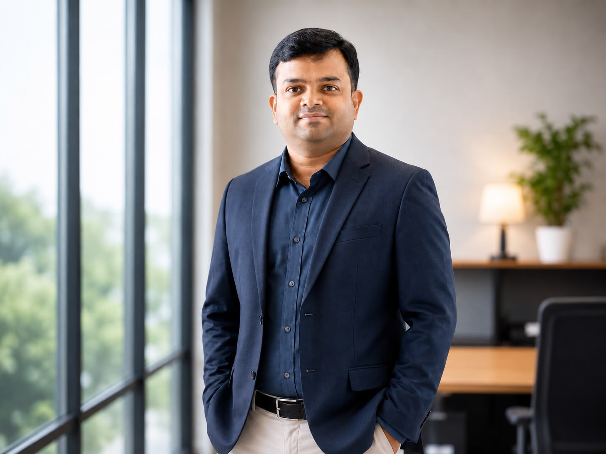

Automation Strategy
ROI-focused automation planning, reusable components, validation, test-data design and regression strategy.
I’m PVN Bhanuprakash, an Automation Lead with 14+ years of experience designing test automation, improving engineering efficiency, and leading quality initiatives across complex products.

My career has evolved from software and embedded testing into automation leadership, with a focus on making quality engineering faster, repeatable and scalable.
I have worked across taxation software, embedded/DTM products, credit derivative trading applications, healthcare monitoring systems, mobile applications, and Salesforce-related automation initiatives.
My strengths include automation strategy, framework development, Python-based automation, regression optimization, CI/CD integration, defect management, stakeholder communication and team mentoring.
ROI-focused automation planning, reusable components, validation, test-data design and regression strategy.
Building maintainable automation frameworks and improving reliability, coverage and execution efficiency.
Python automation alongside Selenium, TestComplete, Appium, BrowserStack, Git and related QA tooling.
Salesforce testing experience backed by Salesforce Admin coursework and broader QA automation expertise.
Team mentoring, project coordination, client demos, status communication and quality ownership.
Experience with CAPL, CANoe, HIL testing and embedded product validation.
Shutterfly · Hyderabad · via ValueLabs
Led automation initiatives across LifeTouch Ripple and Salesforce projects; owned automation strategy, mentoring and execution. Contributed to a comprehensive framework reported to reduce testing time by 40%, while integrating automation into CI/CD pipelines.
UMobile
Created automated test cases, developed Selenium scripts, participated in requirement analysis, documented results and supported continuous QA improvement.
GE Healthcare · Bangalore
Worked on Central Station Monitor testing, automation planning, reusable components, Python/TestComplete automation and regression suites.
Capgemini · Bangalore
Worked on Credit One, a global credit-derivative trading application. Prepared automation plans, automated flows in TestComplete, supported regression and managed defect tracking.
Dear Born Electronics · Bangalore
Tested DTM600 libraries and Device DTMs, created manual and automated test cases, performed functional/performance testing and defect management.
Hexagon India Pvt Ltd · Bangalore
Worked on taxation software, developed test cases and scripts, created test requirements from FSDs and collaborated with development and business teams.
“Committed to continuous professional development and impactful automation solutions.”
— PVN BhanuprakashFor automation, QA leadership, Salesforce testing or engineering opportunities, connect with me through the links below.
Download Full Resume ↓